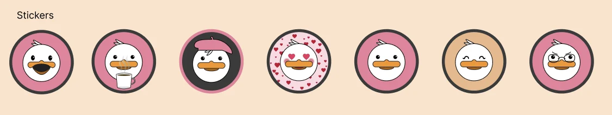
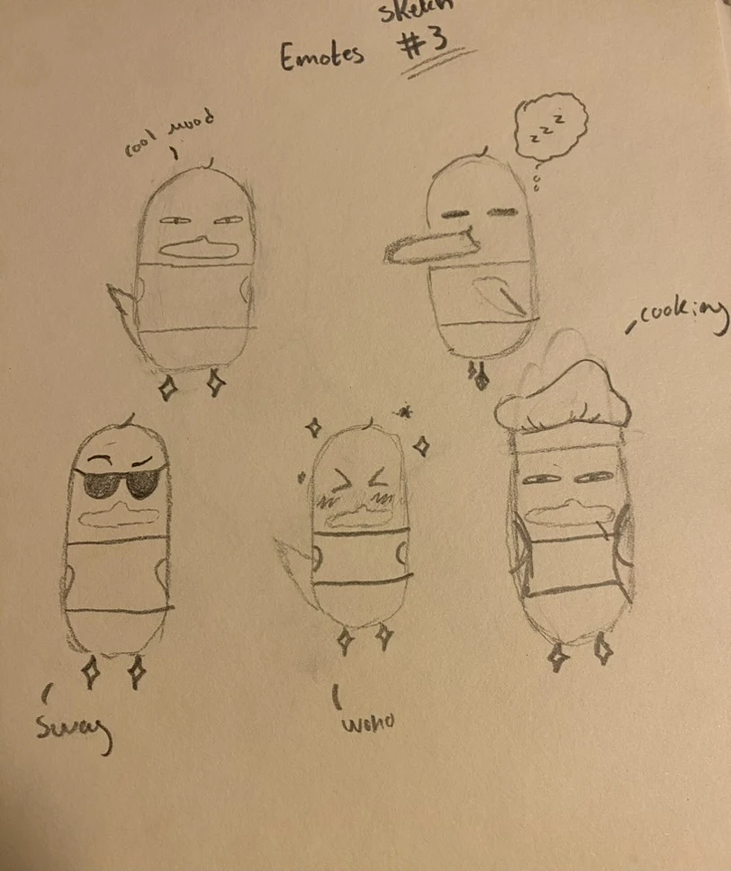
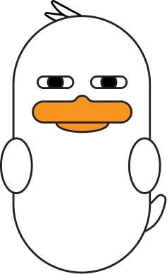
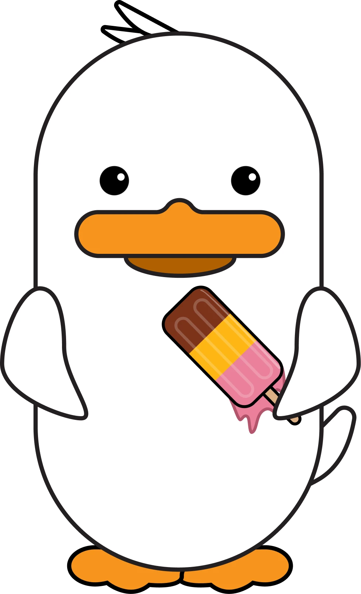
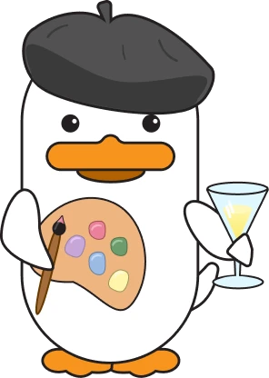
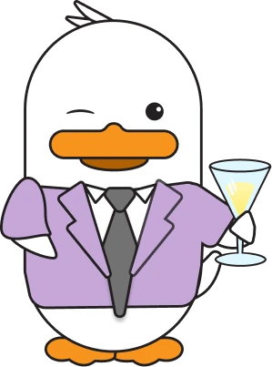
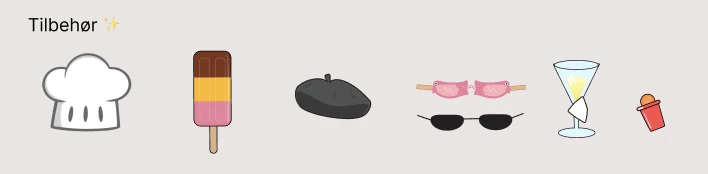
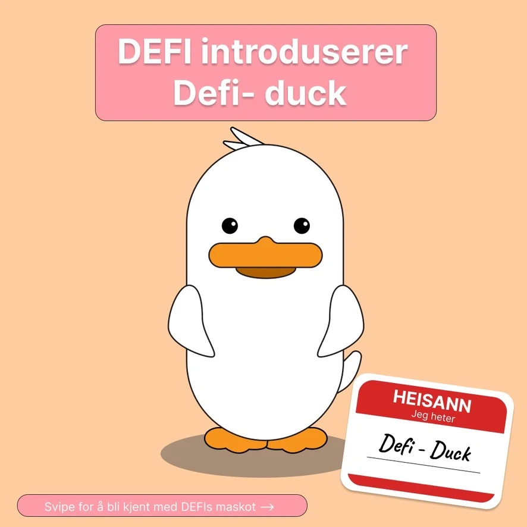
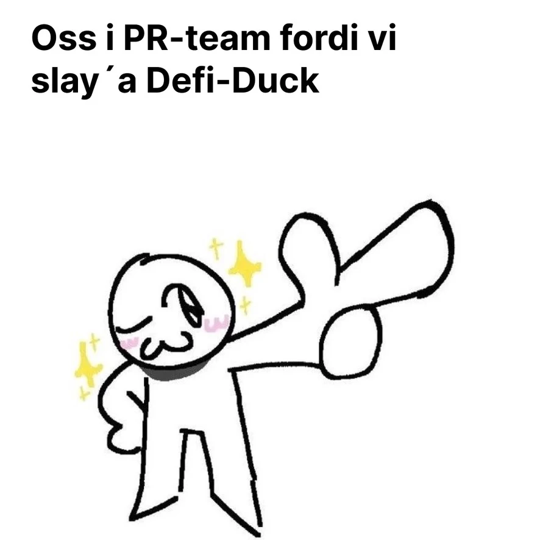
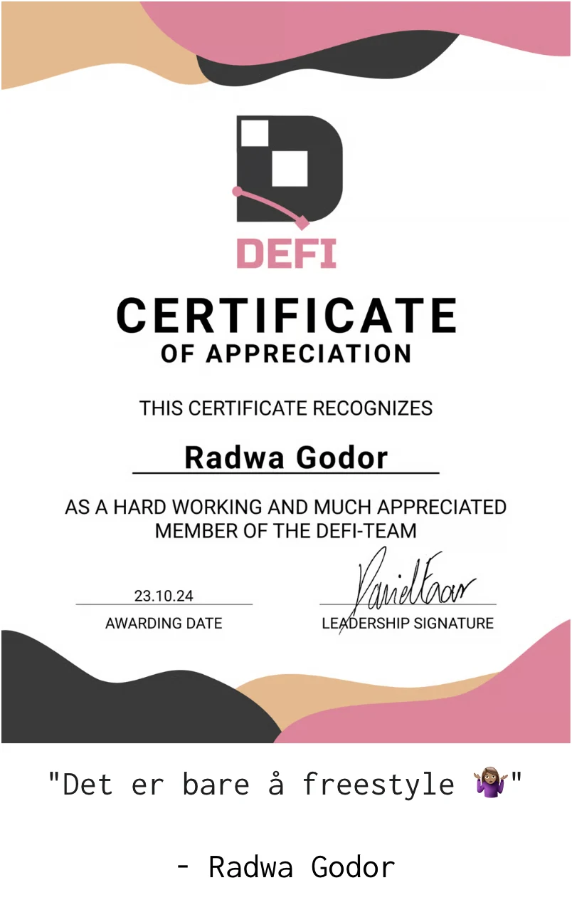

Maskot · DEFI · 2024
Da DEFI ønsket seg en maskot, var det på tide å skape vår lille venn.

DEFI er linjeforeningen for Informatikk: design, bruk og interaksjon på UiO. Da jeg var PR-ansvarlig der i 2024, bestemte vi oss for å realisere en idé: å ha en egen maskot. Resultatet ble Defi Duck.
Jeg skisset de første ideene og designet dem videre sammen med resten av det interne designteamet. Etter noen runder med iterasjoner var Defi Duck klar.

Det startet med blyant og papir. Jeg tegnet ulike uttrykk og stemninger for anda: cool mood, søvnig, swag, woho og cooking.

Sammen med designteamet ble skissene til en digital figur. Formen, nebbet og vingene fra skissene er med, og «cool mood»-blikket lever videre.
Etter noen runder med iterasjoner var Defi Duck klar, med runde øyne og ulike roller og tilbehør.



Små gjenstander som gir anda en rolle: kokkelue, is, beret, briller, drink og mer.

Defi Duck ble presentert med et eget innlegg, og PR-teamet feiret litt.



For arbeidet som PR-ansvarlig fikk jeg et Certificate of Appreciation fra DEFI, datert 23.10.24.